archivo: index.html
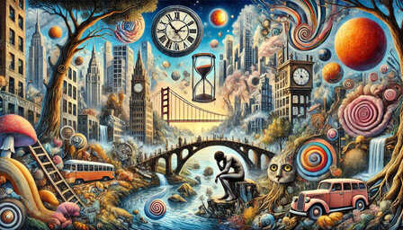
01 poeta en nueva york
02 miguel de unamuno
03 antonio machado
04 vicente aleixandre
05 juan ramón jiménez
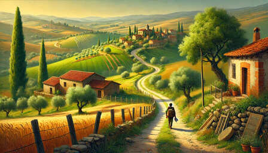
06 camilo josé cela
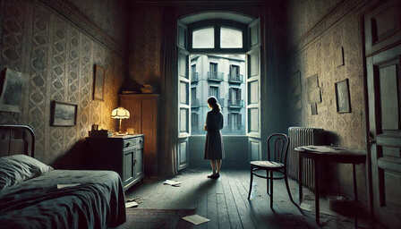
07 carmen laforet
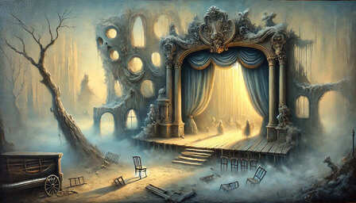
08 ana maría matute
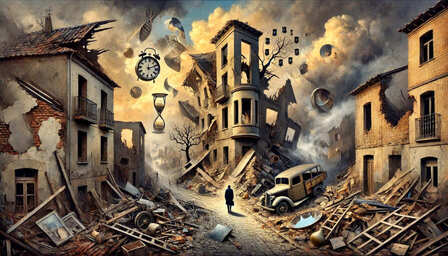
09 max aub
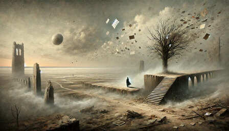
10 luis cernuda
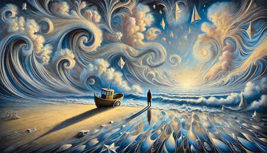
11 rafael alberti
12 ramón gómez de la serna
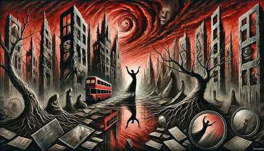
13 dámaso alonso
14 josé ángel valente
15 maría zambrano
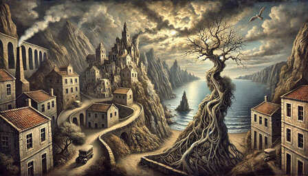
16 gonzalo torrente ballester
17 francisco ayala
18 blas de otero
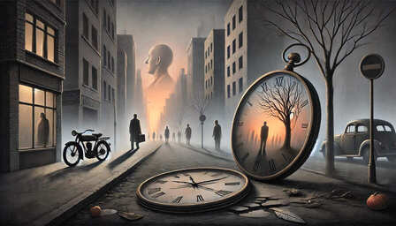
19 jaime gil de biedma
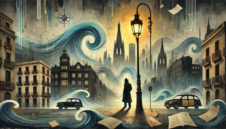
20 manuel vázquez montalbán